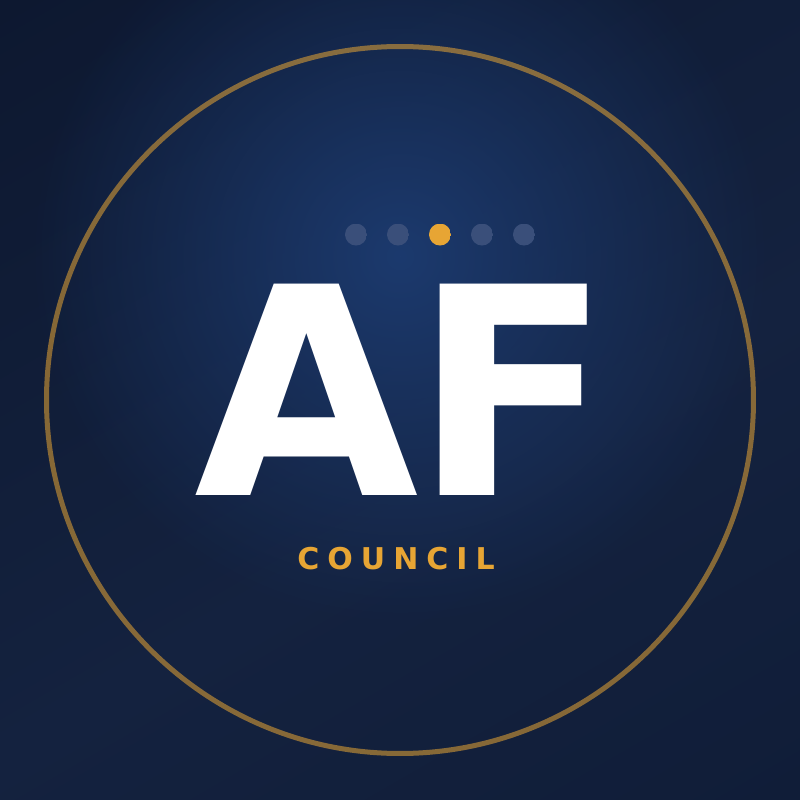

Praxis is an AI-native product studio with a founding principle: use AI to build like a funded team — without surrendering your data, your methods, or your customers to someone else's platform.
The next decade belongs to the people and businesses who learn to direct AI. One person with deep domain knowledge and well-directed AI can now build what used to take a funded team — software, systems, entire product lines. That power is real, it's here, and most of the working world hasn't touched it yet.
But the way most of the world is adopting AI — pouring their lives, their customers, and their operations into whichever service is closest — builds a dependency they don't understand and can't undo. Your data is your leverage, your privacy, and increasingly your identity. Handing it over shouldn't be the price of admission.
Praxis exists to prove there's a better way — and to teach it. We build real products with AI-augmented methods and publish exactly how. We help businesses automate while keeping sovereignty over their data: knowing what lives where, what it's worth, and how to take it back. We turn hard-won expertise into software, win real efficiencies without quiet surrender, and hand the method to anyone willing to learn it.
Theory into practice. That's the whole company.
The people who understand an industry's problems best are almost never the people building its software. Praxis closes that gap — one vertical at a time.
Native Apple-platform apps built end to end — the claims suite: LossList, Roofing Expert, and ClaimForge. One claim, three apps, zero re-keying.
See the suite →The Digital Exposure Audit: find what's publicly discoverable about you or your clients, scored by real-world risk — then make it go away and keep it gone.
The service →Eight practical build-along guides across two series — councils, skills, context, and the sovereignty playbooks. Volume one is free.
Browse the library →
Three decades turning emerging technology into how organizations actually run: chairing Morgan Stanley's post-9/11 disaster-recovery response, steering enterprise migrations at Deutsche Bank, leading digital-asset product delivery at BNY Mellon — the world's largest custody bank — and most recently running operations at MPCH, a privacy-technology firm at the intersection of applied AI and data sovereignty. At Praxis, Adam operates as a one-person executive team directing fleets of AI agents in place of engineers: a subscription product live across four Apple platforms, a three-app claims suite, eight published papers, and a privacy consulting practice — all shipped in months. His thesis: the next great companies will be small, sovereign, and AI-operated. Praxis is the proof in progress.
Follow Praxis on Gumroad and every new release — papers, guides, and the occasional free drop — lands in your email. No spam, no algorithm, unsubscribe anytime.
Follow on GumroadPraxis LLC · Orlando, Florida — founded and run by Adam Fischer. If your industry's software is still a filing cabinet and a prayer, let's talk.
hello@praxis-hq.ai